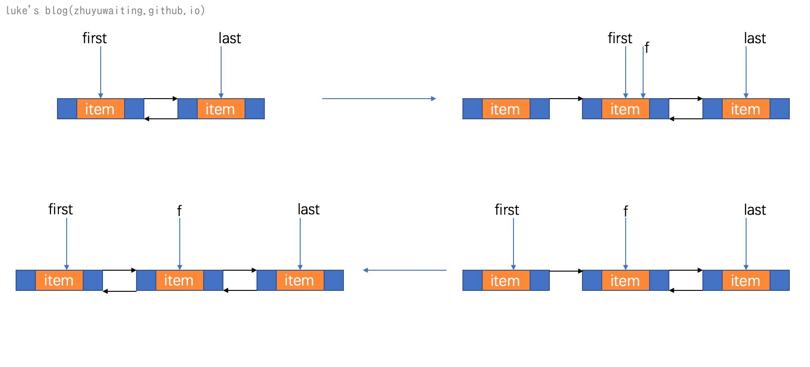

前言：
如果说ArrayList是随机访问的典型结构，那LinkedList就是典型的顺序访问结构。
在ArrayList的源码分析中我们提到，ArrayList的出现是为了弥补数组大小需要自我管理，避免数组越界等问题，提供了自动扩容的特性，以及数组插入元素删除元素的元素移动管理等等。
那么LinkedList相比于ArrayList又具有哪些优点或者缺点呢？让我们先看看LinkedList的数据结构在来回答这个问题。
LinkedList源码解析
数据结构是一切的基础
view code
1 | //首节点 |
通过上述源码可以发现，LinkedList内部的结构就如同下图所示的双向链表

如果所示，在LinkedList的内部维护了一个双向列表，并且分别使用first和last指针指向了双向链表的头部和尾部，如此，便可以从头开始，或者从尾部开始进行查找。
LinkedList的优缺点:
既然linkedList是以链表为基础结构的，那边链表的优缺点LinkedList也基本具备。
优点：
- 插入删除操作仅仅需要修改对应指针，不在需要移动元素操作。
- 大小可无限扩展和缩减，无需进行扩容的相关操作。
缺点：
- 无法进行随机访问，需要访问某个位置的节点，只能从头开始遍历。
链表的基础操作其实相当麻烦，需要插入一个元素的时候，需要修改前一个节点指针后一个节点指针，那么LinkedList作为链表的封装，又提供了哪些基础函数可以使用呢？
LinkedList重要函数
link* && unLink* 方法
linkFirst && unlinkFirst
1 | //设置e为第一个元素 |
说明：
上面两个函数，为其他函数例如 addFirst等函数提供了基础操作，主要作用是链表头部插入元素，和链表头部删除元素。
linkFirst:

unlinkFirst:
剩余link* && unlink* 函数
view code
1 | //设置e为尾节点，为add提供服务 |
说明：
上述所有的link，unlink操作，包含了对于一个链表的最基本插入节点和删除节点操作，提供了对于首、尾、特定节点的插入删除操作的封装，以共用并且简化其他api的复杂度。
node
1 | Node<E> node(int ) { |
说明：
node函数，提供了一个搜索特定位置节点的方法，该方法为add(1,e)提供了基础，插入特定位置某个特定元素提供了基础方法
add
1 | public boolean add(E e) { |
说明： link* 函数上述已经描述过了，add函数均是调用link*还是来实现插入元素的操作。
addAll()
view code
1 | /** |
说明：
addAll()函数中，有一个很有意思的点，就是 Object[] a = c.toArray(); 为什么插入集合元素的时候需要先把集合转化为数组呢？
查看addAll的注释解释，发现也并没有说明这个事情，那么我们去看下toArray()方法是否会有这个解释呢？
1 | /** |
根据注释的解释我们可以发现：
Collection.toArray()方法的定义上，是提供一个安全的方法，是的获取到的数组可以被自由的修改或者是删除元素,而不会影响到原本的集合
注意：对于Collection.toArray()进行实现的时候，请务必遵循改原则
那么我们在来看一下LinkedList的toArray()方法:
1 | public Object[] toArray() { |
同样的我们发现一个事情，就是如果你对这个数组进行了增加删除修改，是不会反应到集合的。但是这个safe是不会包含对象的safe，也就是 集合的对象和数组的对象还是一个对象 如果我们修改了数组中对象的属性，那么原集合中也会有体现
remove
1 | public E removeFirst() { |
说明： 与add类似，remove也是基于link* 函数和node函数进行的封装。
并且从上述操作中我们可以发现，删除一个特定位置的节点，对于LinkedList来说时间复杂度为O(n).
get
1 | public E get(int index) { |
总结：
通过上面的增加，删除，查询，我们可以发现对于LinkedList或者说对于链表来说，基础操作都是基于link* unlink* node()函数进行的，也就是节点前后添加元素，节点前后删除元素的指针操作，以及查找指定位置元素这个三个基本操作进行的。
额外特性，题外话
1 | public E poll() { |
说明：
由于LinkedList采用的双链表的实现方式，add 和 remove 头尾节点非常的方便，并且耗时为O(1)，时间复杂度极低，故而LinkedList同样还可以作为栈或者队列来使用， pop push 操作构成了先进后出的栈结构， poll add 变成了先进先出的队列结构。